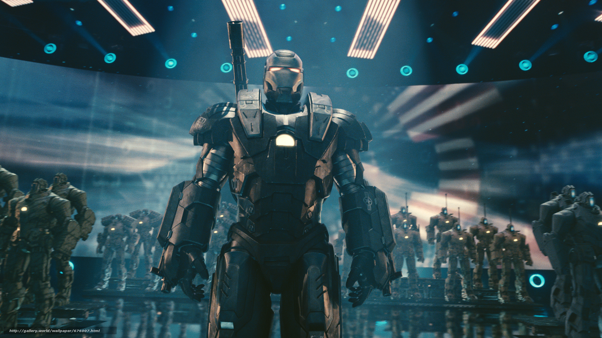

Тони Старк повысил свою помощницу Пеппер Поттс до генерального директора Stark Industries вскоре после возвращения выставки Stark Expo. Это выставка последних инноваций Stark Industries, открытая также для любой другой компании.
Правительство США больше не производит оружие для военных и обратилось к другим поставщикам, таким как Джастин Хаммер. Хаммер заставляет Ивана Ванко построить батальон военных дронов для представления на Старк Экспо.На презентации Ванко получает дистанционное управление как дронами, так и броней "Воителя", которую носит Джеймс Роудс, направляя их на нападение на Железного человека. С помощью Черной Вдовы и Пеппер Поттс, Роудс восстанавливает контроль над костюмом, и вместе с Железным Человеком объединяются, чтобы победить дронов и Ванко. Хаммер арестован полицией.